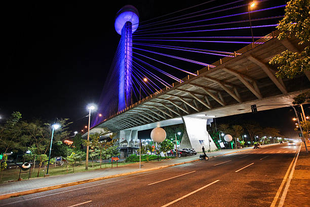
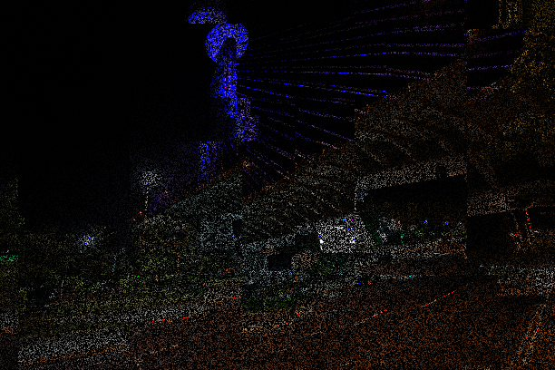

PORTFÓLIO DIGITAL • PRODUÇÕES
GLITCH ART
Quando o erro se transforma em arte. Uma experimentação visual que utiliza falhas, distorções e interferências digitais como formas de expressão artística.
Imagem original

Fotografia original utilizada como base para a criação da obra.
Imagem modificada

Resultado da intervenção digital, apresentando distorções e efeitos visuais como ruídos.
01 — PROCESSO CRIATIVO
Como a obra foi criada?
Para desenvolver esta produção, foi escolhida uma fotografia de um local culturalmente significativo de Teresina, a ponte estaiada. A imagem original foi utilizada como ponto de partida para uma intervenção digital, na qual foram aplicadas modificações intencionais para produzir uma estética de falha tecnológica.
Durante o processo, foram exploradas alterações visuais como distorções, deslocamentos de cores, interferências e fragmentações. O objetivo foi transformar uma fotografia comum em uma composição visual diferente, explorando as possibilidades expressivas dos erros digitais.
02 — REFLEXÃO ARTÍSTICA
Quando uma falha se torna arte?
Uma falha tecnológica normalmente é considerada um defeito porque representa um comportamento inesperado de um sistema digital. Entretanto, quando esse erro é utilizado intencionalmente, ele pode adquirir um novo significado e se tornar um recurso de expressão artística.
Na Glitch Art, as imperfeições deixam de ser apenas problemas técnicos e passam a fazer parte da composição. Distorções, ruídos e alterações visuais despertam novas interpretações sobre a imagem, mostrando que a tecnologia também pode ser utilizada de maneira criativa e experimental.